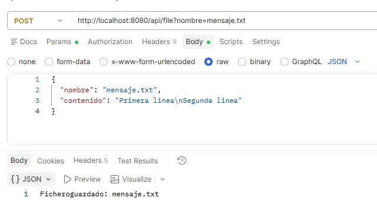
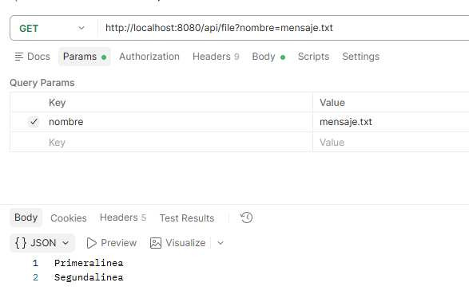
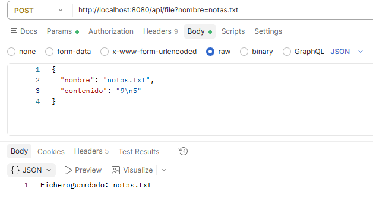
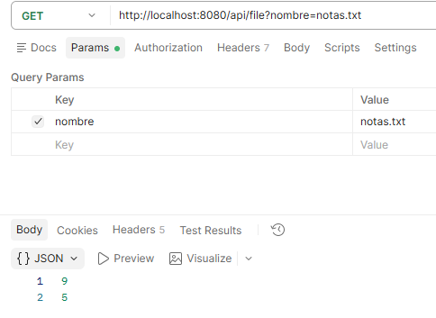
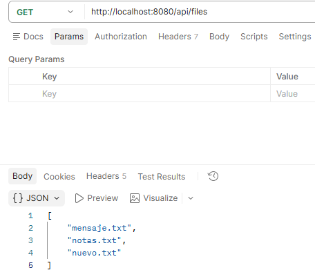

Crear, leer y listar ficheros de texto¶
En la primera aplicación con ficheros escribíamos un texto fijo en data/mensaje.txt. Ahora el cliente elegirá el nombre y el contenido, como en la opción 4 del ejercicio 2. Conservaremos la lectura de la opción 5 y añadiremos un listado.
Cómo trabajar esta página
Continúa en el proyecto del ejemplo anterior. Primero modifica la aplicación para escribir y leer mensaje.txt con datos enviados por el cliente; comprueba el resultado antes de añadir el listado.
1. Recibir los datos que antes pedíamos por teclado¶
En consola utilizábamos readln() para pedir el nombre y las líneas hasta FIN. Aquí el cliente enviará todos esos datos juntos en el cuerpo de una petición JSON:
\n representa un salto de línea. Ya no necesitamos la palabra FIN: el cuerpo de la petición contiene el texto completo.
Antes, mensaje.txt y el texto estaban escritos dentro del servicio. Ahora viajan en la petición: podremos cambiarlos sin modificar el código Kotlin.
Crea model/CrearTextoRequest.kt dentro de com.example.ficherosapi:
Esta clase representa los datos que recibimos del cliente: nombre y contenido. El paquete model ya existe desde la aplicación del saludo; añadimos este fichero dentro de él.
package com.example.ficherosapi.model
data class CrearTextoRequest( // (1)!
val nombre: String,
val contenido: String
)
- Define los dos datos que esperamos recibir en el JSON:
nombreycontenido. Spring creará un objeto de esta clase cuando procese la petición.
2. Ampliar el servicio¶
Actualiza service/FileService.kt conservando el método de la primera aplicación y añadiendo una versión que recibe el nombre y el contenido como parámetros:
package com.example.ficherosapi.service
import org.springframework.stereotype.Service
import java.nio.file.Files
import java.nio.file.Path
@Service
class FileService {
private val folder: Path = Path.of("data") // (1)!
init {
Files.createDirectories(folder) // (2)!
}
private fun resolveName(nombre: String): Path {
require(nombre.isNotBlank() && nombre != "." && nombre != "..") { // (3)!
"El nombre del fichero no es válido"
}
require(nombre.none { it in "/\\:" }) { // (4)!
"Introduce solo un nombre, sin carpetas"
}
return folder.resolve(nombre) // (5)!
}
// Mantiene la operación inicial, que escribía un mensaje fijo.
fun writeMessage() {
Files.writeString(folder.resolve("mensaje.txt"), "Hola desde un fichero")
}
fun writeMessage(nombre: String, contenido: String) {
Files.writeString(resolveName(nombre), contenido) // (6)!
}
fun readMessage(nombre: String): String {
return Files.readString(resolveName(nombre)) // (7)!
}
}
- Ahora guardamos la ruta de la carpeta, en lugar de fijar la ruta de un único fichero como
data/mensaje.txt. - El bloque
initse ejecuta al crear el servicio. Crea la carpeta si todavía no existe. requirecomprueba una condición y lanza una excepción si no se cumple. Aquí rechazamos nombres vacíos, formados solo por espacios,.y...- Rechazamos separadores de carpetas y los dos puntos: esperamos un nombre como
mensaje.txt, no una ruta proporcionada por el cliente. - Une la carpeta con el nombre recibido. Por ejemplo,
dataymensaje.txtformandata/mensaje.txt. - Escribe el contenido recibido en el fichero elegido. Si ya existe, sustituye su contenido.
- Lee el fichero elegido y devuelve su contenido como
String, sin imprimirlo en la consola del servidor.
resolveName es una función auxiliar de Kotlin que reutilizamos al escribir y al leer. Para estas prácticas utiliza una carpeta de pruebas con ficheros normales, sin enlaces simbólicos.
El servicio no utiliza readln() ni decide cómo enviar una respuesta HTTP.
3. Ampliar el controlador¶
Introducimos dos anotaciones para recibir datos:
| Anotación | Para qué sirve en este ejemplo |
|---|---|
@RequestBody |
Convierte el cuerpo JSON en un objeto CrearTextoRequest |
@RequestParam |
Obtiene el nombre indicado en la URL al leer |
Actualiza controller/FileController.kt conservando la operación inicial y añadiendo la recepción de JSON:
package com.example.ficherosapi.controller
import com.example.ficherosapi.model.CrearTextoRequest
import com.example.ficherosapi.service.FileService
import org.springframework.web.bind.annotation.GetMapping
import org.springframework.web.bind.annotation.PostMapping
import org.springframework.web.bind.annotation.RequestBody
import org.springframework.web.bind.annotation.RequestParam
import org.springframework.web.bind.annotation.RestController
@RestController
class FileController(
private val fileService: FileService
) {
@PostMapping("/api/file") // (1)!
fun write(@RequestBody(required = false) datos: CrearTextoRequest?): String { // (2)!
if (datos == null) {
fileService.writeMessage()
return "Fichero guardado: mensaje.txt"
}
fileService.writeMessage(datos.nombre, datos.contenido) // (3)!
return "Fichero guardado: ${datos.nombre}" // (4)!
}
@GetMapping("/api/file")
fun read(@RequestParam(defaultValue = "mensaje.txt") nombre: String): String { // (5)!
return fileService.readMessage(nombre) // (6)!
}
}
- Asocia las peticiones
POST /api/filecon este método. La anotación atiende la petición que envía el cliente. @RequestBody(required = false)permite aceptar el JSON nuevo y también la petición antigua sin cuerpo. Si no llega JSON, se conserva la escritura fija de la primera aplicación.- Entrega el nombre y el contenido al servicio, que realiza la escritura.
- Devuelve al cliente una confirmación con el nombre del fichero guardado.
@RequestParamrecogenombrede la URL. Si no se indica,defaultValuepermite seguir leyendomensaje.txt, como en el ejemplo anterior.- Pide al servicio la lectura y devuelve su resultado al cliente. El servicio recibe un
Stringnormal: no necesita saber que procede de una URL.
GET /api/file sigue leyendo mensaje.txt por defecto. También podemos indicar su nombre mediante ?nombre=mensaje.txt. POST /api/file acepta ahora un cuerpo JSON, pero mantiene la posibilidad de enviarse sin datos para conservar la operación de la primera aplicación.
4. Comprobar la escritura y la lectura¶
Podemos probar la misma API con Postman o con PowerShell. Elige una de las dos herramientas: no necesitas repetir las pruebas con ambas ni cambiar el código Kotlin.
Opción A: utilizar Postman¶
Escribir el fichero con POST¶
- En el selector situado junto a la URL, elige POST.
- Introduce
http://localhost:8080/api/fileen el campo de la URL. - Abre la pestaña Body, selecciona raw y elige JSON como formato.
- Copia este contenido en el editor del cuerpo de la petición:
- Pulsa Send para enviar la petición.

Al seleccionar JSON, Postman añade la cabecera Content-Type: application/json, que indica al servidor el formato de los datos. Puedes comprobarla en Headers. En este JSON, \n representa el salto de línea.
En el panel de respuesta deberías ver el estado 200 OK y este texto:
Comprueba que data/mensaje.txt contiene las dos líneas enviadas. Ese fichero está en el servidor; Postman solo envía el nombre y el contenido.
Leer el fichero con GET¶
- Crea otra petición HTTP y elige GET.
- Introduce
http://localhost:8080/api/file. - En Params, añade una fila con Key
nombrey Valuemensaje.txt. Postman completará la URL con?nombre=mensaje.txt. - Deja Body → none: para esta lectura no enviamos JSON.
- Pulsa Send.
La respuesta debe tener el estado 200 OK y mostrar:

Puedes guardar las peticiones con Save en una colección llamada Ficheros API, con los nombres Escribir texto y Leer texto, para reutilizarlas durante las pruebas.
Si no recibes la respuesta esperada
- No se puede conectar: comprueba que la aplicación está arrancada y utiliza el puerto
8080. - 404: revisa la ruta
/api/file. - 405: comprueba el método seleccionado,
POSTpara escribir oGETpara leer. - 400 o 415 al escribir: revisa que has elegido Body → raw → JSON y que el cuerpo contiene
nombreycontenidoentre comillas dobles. - Error al leer: envía primero la escritura y comprueba que utilizas el mismo nombre.
Consulta la guía oficial de Postman sobre parámetros y cuerpo de la petición si necesitas localizar estas opciones.
Opción B: utilizar PowerShell¶
Reinicia la aplicación para cargar los cambios. En PowerShell, prepara el JSON del apartado 1 y envíalo con POST, como en el ejemplo anterior, añadiendo ahora el contenido de la petición:
$datos = @{
nombre = "mensaje.txt"
contenido = "Primera linea`nSegunda linea"
} | ConvertTo-Json
Invoke-RestMethod -Method Post -Uri "http://localhost:8080/api/file" -ContentType "application/json" -Body $datos
ConvertTo-Jsonconvierte el nombre y el contenido en JSON.- En la cadena de PowerShell,
`nintroduce el salto de línea; al convertirla a JSON se representa como\n. -ContentTypeindica que enviamos JSON y-Bodycontiene los datos de la petición.- El servidor guarda el texto en
data/mensaje.txt, sustituyendo el contenido del ejemplo anterior.
Debes recibir Fichero guardado: mensaje.txt. Comprueba que data/mensaje.txt contiene ahora las dos líneas enviadas.
Lee el contenido:
Puedes abrir esa misma URL en el navegador para leer. Para escribir usamos Postman o PowerShell porque necesitamos enviar un POST con datos; la barra de direcciones del navegador envía un GET.
Comprobar los cambios con cualquiera de las herramientas¶
Comprueba que lo entiendes
Cambia contenido en el JSON de Postman y pulsa Send, o modifica y ejecuta de nuevo el bloque completo de PowerShell. Después repite la lectura. ¿Qué texto esperas recibir?
Respuesta
El nuevo texto. Files.writeString sustituye el contenido del fichero existente. No necesitas modificar el código Kotlin ni reiniciar Spring para enviar otros datos.
Probar otro nombre elegido por el cliente¶
Para comprobar la equivalencia con la opción 4 del ejercicio 2, cambia el valor de nombre de mensaje.txt a notas.txt. En Postman, modifica el JSON de la petición POST y pulsa Send; en PowerShell, modifica y ejecuta el bloque completo de escritura. notas.txt es un nombre de prueba elegido ahora, no un archivo que debas tener del ejercicio anterior.
La API creará data/notas.txt y conservará data/mensaje.txt. Para leer el nuevo fichero, utiliza http://localhost:8080/api/file?nombre=notas.txt. Así comprobamos que el nombre ya no está fijado en el servicio.


5. Añadir el listado¶
El listado es una ampliación de nuestra API: nos permitirá ver los nombres de los ficheros creados en data.
Ahora que la escritura y la lectura funcionan, añade este método dentro de FileService, antes de la última llave:
fun list(): List<String> {
return Files.list(folder).use { paths -> // (1)!
paths
.filter { Files.isRegularFile(it) } // (2)!
.map { it.fileName.toString() } // (3)!
.sorted() // (4)!
.toList() // (5)!
}
}
- Obtiene las entradas de
data.usecierra el recurso al terminar, también si se produce un error. - Conserva los ficheros normales y descarta las carpetas.
itrepresenta cada ruta que estamos comprobando. - De cada ruta extrae solo el nombre, por ejemplo
mensaje.txt, y lo convierte a texto. - Ordena los nombres alfabéticamente.
- Reúne el resultado en una lista de cadenas (
List<String>) que devuelve el método.
Añade también este método dentro de FileController:
- Crea la operación
GET /api/filespara listar. La ruta termina enfiles, en plural, para distinguirla de/api/file, que lee un fichero. - Solicita los nombres al servicio y devuelve la lista. Spring la convierte automáticamente en una respuesta JSON.
No hacen falta imports nuevos.
Reinicia la aplicación para cargar los métodos añadidos y consulta los nombres guardados con la herramienta elegida:
- Postman: crea una petición GET a
http://localhost:8080/api/files, sin parámetros y con Body → none, y pulsa Send. Puedes guardarla comoListar ficheros. Espera una respuesta 200 OK con la lista JSON. - PowerShell: ejecuta esta petición:
También puedes abrir esa URL en el navegador. Si has completado las pruebas con mensaje.txt y notas.txt y no tienes otros ficheros en data, la respuesta JSON será:
PowerShell muestra la lista ya interpretada. El listado real dependerá de los ficheros que tengas en data.

6. Relación con el ejercicio 2¶
| Ejercicio 2 | Aplicación actual |
|---|---|
Opción 4: pedir nombre y texto hasta FIN |
POST /api/file con nombre y contenido en JSON |
| Opción 5: pedir nombre y mostrar el texto | GET /api/file?nombre=mensaje.txt y devolver el contenido |
| Ampliación de esta API | GET /api/files para consultar los nombres guardados |
| Mostrar información por consola | Devolver texto o una lista JSON al cliente |
La misma operación con otra entrada
Hemos conservado la escritura y la lectura, sustituyendo los valores fijos por datos enviados por el cliente. El servicio continúa trabajando con las clases de ficheros que ya conocemos.
En el siguiente paso añadiremos la subida de un archivo que ya existe en el ordenador del cliente, manteniendo estas operaciones.